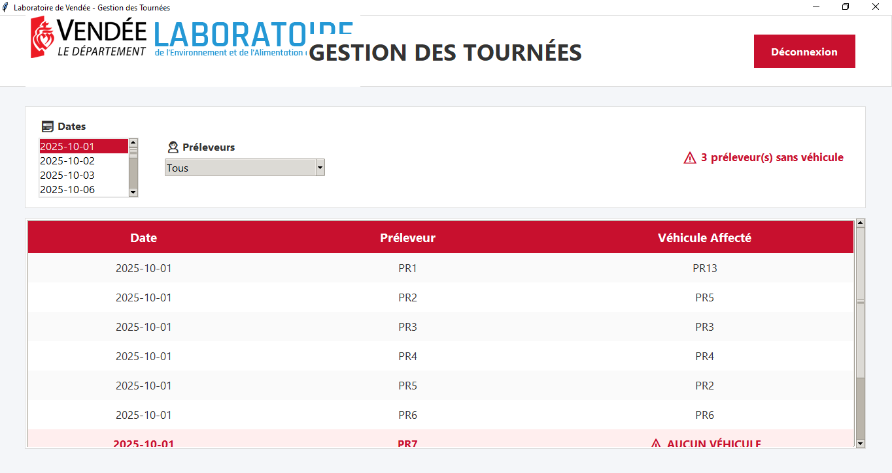

Étudiant en BUT Science des Données
Je me forme au métier de Data Scientist avec un fort intérêt pour l'analyse de données et le machine learning.

Je me forme au métier de Data Scientist avec un fort intérêt pour l'analyse de données et le machine learning.

Concours en collaboration avec l'Insee. Réalisation d'une infographie sur les jeunes de 15 à 29 ans.

Analyse de données, reporting et datavisualisation pour l'Observatoire Mavie. Gestion et la préparation des données.

Conception et réalisation d'un programme de gestion des tournées et d'un tableau de bord du Laboratoire de l'environnement et de l'alimentation de Vendée.
Cette première année en BUT Science des Données à Niort a été une belle expérience pour moi, tant sur le plan personnel que scolaire. Dès le début de l’année, j’ai dû m’adapter à une nouvelle vie, celle en appartement, loin de chez moi. La transition s’est faite de manière assez fluide, et j’ai eu la chance de rencontrer des personnes bienveillantes et ouvertes. Grâce à ce cadre, j’ai rapidement trouvé mon rythme et me suis habitué à la vie universitaire.
Le premier semestre s’est très bien déroulé. J’ai compris assez vite que j’étais à ma place dans cette formation, et cela m’a motivé à m’investir pleinement. J’ai adopté un rythme de travail régulier et efficace. Le fait d’avoir suivi la spécialité NSI au lycée m’a donné une avance en programmation, ce qui m’a permis de consacrer davantage de temps à d’autres matières que je découvrais, comme les statistiques ou l’économie. Je craignais au départ de m’ennuyer en reprenant les bases en programmation, mais finalement, cela m’a permis de renforcer mes acquis, d’aider mes camarades et d’adapter mes compétences au nouveau contexte. Je considère ce premier semestre comme une vraie réussite, aussi bien sur le plan des résultats que sur le plan de l’attitude. J’étais motivé, sérieux, et l’envie de me dépasser, notamment dans une forme de compétition amicale avec mes camarades, m’a poussé à donner le meilleur de moi-même.
Le deuxième semestre s’est également bien passé, avec des résultats satisfaisants. Il a été, selon moi, plus enrichissant encore, car j’y ai découvert de nouveaux outils et de nouvelles notions. Mais cette nouveauté a aussi apporté davantage de complexité. Malgré tout, j’ai su m’adapter, progresser et maintenir un bon niveau. Cela dit, ma motivation a connu une baisse durant cette période. En me reposant sur les bons résultats du premier semestre, je me suis un peu relâché. Ce relâchement a duré environ deux mois, entre mars et avril. Mes notes n’étaient pas mauvaises, mais je sentais que je n’étais plus autant impliqué, et que je n’exploitais pas tout mon potentiel. J’ai eu un déclic en mai : j’ai pris conscience de ce relâchement et me suis rapidement remis au travail. Le retour de ma motivation s’est accompagné de projets stimulants, notamment le concours Dataviz, que je tenais à réussir. Ces projets m’ont redonné une dynamique de travail sérieuse, similaire à celle du premier semestre.
D’un point de vue global, je suis satisfait de mon année. Je ne m’attendais pas à obtenir d’aussi bons résultats, et je pense que la compétition bienveillante entre camarades, ainsi que la bonne ambiance dans la promotion, y ont largement contribué. J’ai fait de nouvelles rencontres, découvert le monde de la donnée, et commencé à comprendre les enjeux et les métiers liés à ce domaine. L’un de mes objectifs de l’année était d’obtenir une alternance pour la suite de mon parcours. Pour l’instant, cet objectif n’est pas encore atteint, malgré un investissement important dans mes recherches. Je reste motivé, et je continue à chercher activement. Je suis convaincu qu’une expérience en entreprise serait un véritable atout pour ma formation, autant sur le plan des compétences que sur le plan personnel.
En résumé, cette première année a été réussie, enrichissante, et pleine de découvertes. J’ai atteint mes objectifs académiques et j’ai beaucoup appris sur moi-même. Je suis désormais prêt à repartir avec énergie et ambition pour ma deuxième année au sein du BUT Science des Données.
Cette deuxième année en BUT Science des Données a été marquée par de nombreuses nouveautés, notamment avec la mise en place des parcours de spécialisation. Ces nouveaux groupes de TD m'ont permis de travailler avec des personnes différentes de celles avec qui j'avais l'habitude de collaborer en première année.
Lorsque je repense à mon arrivée en BUT il y a maintenant deux ans, je me rends compte du chemin parcouru. À l'époque, je n'étais pas totalement certain de mon choix d'orientation et j'avais peur de regretter cette formation. J'appréhendais également mon intégration dans la promotion, étant de nature plutôt réservée. Aujourd'hui, avec le recul, je peux affirmer avec confiance que je ne regrette absolument pas ce choix. Ces deux années ont confirmé mon intérêt pour le domaine de la donnée et m'ont permis de m'épanouir aussi bien sur le plan personnel qu'académique.
Le premier semestre s'est très bien déroulé. Malgré un emploi du temps parfois chargé, avec de longues journées de cours, j'ai réussi à conserver ma motivation et mon sérieux tout au long de cette période. La fin du semestre a été particulièrement intense, avec de nombreux projets et évaluations concentrés sur quelques semaines. Cette charge de travail importante m'a obligé à m'organiser efficacement et à travailler en équipe avec mes camarades. La bonne ambiance de la promotion ainsi que l'entraide entre étudiants m'ont beaucoup aidé à traverser cette période. J'ai terminé ce premier semestre avec de très bons résultats, ce qui a récompensé les efforts fournis.
Cette période a également été marquée par la recherche de stage. Heureusement, cette recherche s'est révélée plus rapide que prévu puisque j'ai obtenu un stage à la MAIF dès le mois de décembre. Cette opportunité m'a permis d'aborder la suite de l'année avec davantage de sérénité.
Le deuxième semestre a été plus court mais également très intense. Bien qu'il y ait eu moins de cours, les projets étaient nombreux et demandaient un investissement important. J'ai particulièrement apprécié cette période car les projets étaient variés et concrets. Ils m'ont permis de mobiliser plusieurs compétences à la fois. Même si mes résultats ont été légèrement inférieurs à ceux du premier semestre, je reste satisfait du travail accompli et des connaissances acquises.
Sur le plan technique, cette deuxième année m'a permis de consolider mes compétences en programmation, en statistiques et en gestion des données. J'ai également découvert de nouveaux outils et de nouvelles méthodes de travail qui me seront utiles pour la suite de mes études et dans ma future vie professionnelle. Les différents projets réalisés au cours de l'année m'ont permis de développer mon autonomie, ma capacité d'analyse et mon aptitude à travailler en équipe.
La dernière partie de l'année a été consacrée à mon stage à la MAIF, au sein de la squad GéoDataHub. Cette expérience a été particulièrement enrichissante. Les missions qui m'ont été confiées m'ont permis de découvrir d'autres facettes des métiers de la donnée et de comprendre plus concrètement le fonctionnement d'une équipe dans un environnement professionnel. J'ai pu appliquer les connaissances acquises durant ma formation tout en découvrant de nouveaux outils et de nouvelles pratiques. Cette immersion en entreprise a confirmé mon intérêt pour le domaine de la data et a renforcé mon projet professionnel.
À l'issue de ce stage, j'ai eu l'opportunité de poursuivre mon expérience à la MAIF au mois de juillet dans le cadre d'un CDD. Cette continuité représente une réelle satisfaction pour moi et constitue une preuve de la confiance accordée à mon travail. Le stage, associé aux projets réalisés à l'université, a définitivement confirmé mon souhait de devenir data scientist.
Cette année marque également une étape importante de mon parcours puisque j'intégrerai l'ENSAI l'année prochaine afin de poursuivre ma formation dans le domaine de la science des données. Cette admission représente l'aboutissement de deux années de travail et correspond pleinement à mes objectifs professionnels.
Cette deuxième année est donc ma dernière au sein du BUT Science des Données de Niort. Je retiendrai avant tout les nombreuses rencontres que j'ai pu faire durant ces deux années, les camarades avec qui j'ai eu plaisir à travailler et les projets que nous avons menés ensemble. Je garderai également un très bon souvenir de l'équipe pédagogique, toujours disponible, à l'écoute et proche des étudiants.
Au-delà des compétences techniques acquises, ces deux années m'ont également permis d'évoluer sur le plan personnel. J'ai gagné en confiance en moi et en sociabilité grâce à une promotion accueillante et à une excellente ambiance de travail. Comme je l'avais déjà évoqué dans mon bilan de première année, la compétitivité bienveillante entre étudiants a continué à jouer un rôle important dans ma motivation. Elle m'a poussé à rester ambitieux, à donner le meilleur de moi-même et à toujours chercher à progresser.
Pour conclure, je considère ces deux années comme une réussite, aussi bien sur le plan académique que personnel. Elles m'ont permis de grandir, d'acquérir de solides compétences et de confirmer mon projet professionnel. Je quitte le BUT SD avec de très bons souvenirs, de l'expérience et une grande motivation pour la suite de mon parcours. Si le Antonin de début de première année avait encore des doutes sur son orientation et sa capacité à trouver sa place, celui qui termine aujourd'hui son BUT repart avec des certitudes, de l'expérience et une réelle confiance dans la suite de son parcours.
Mon email : antonin.vionpro@gmail.com